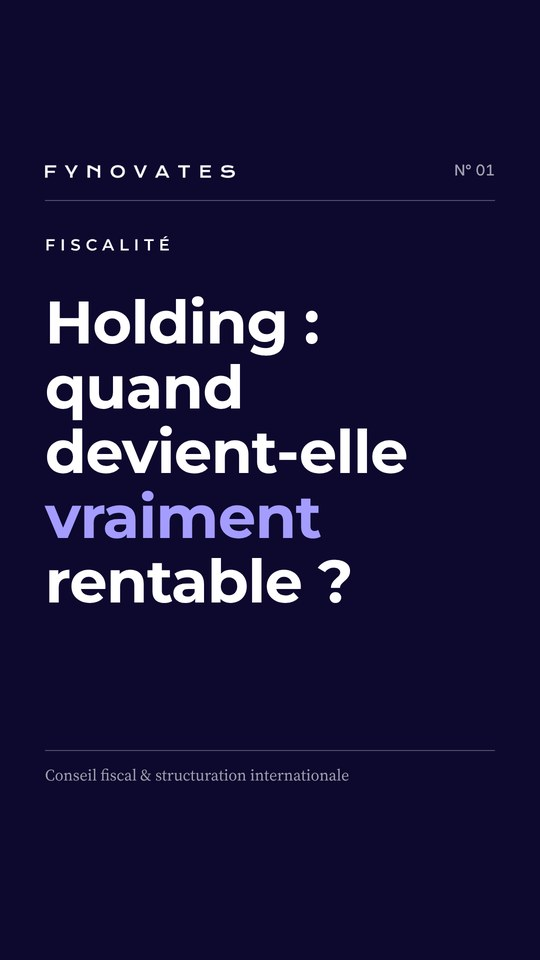
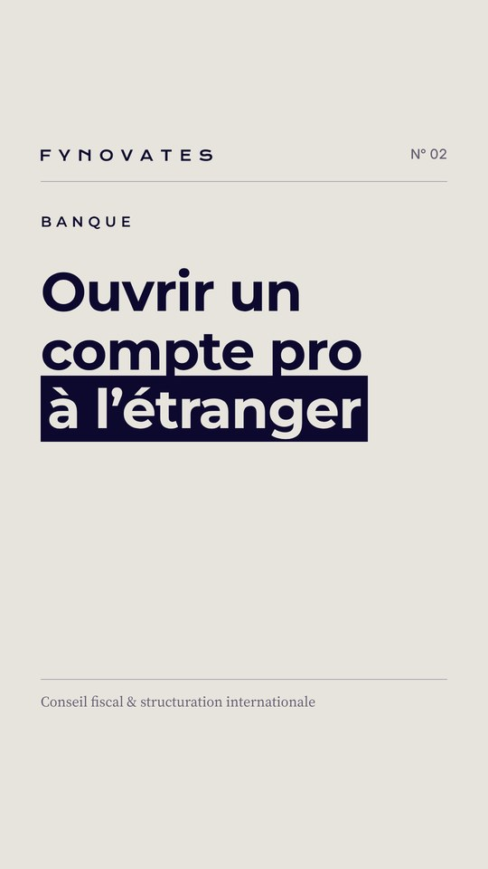
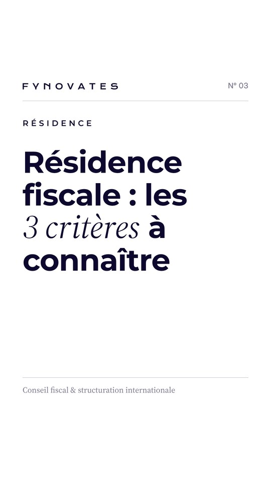
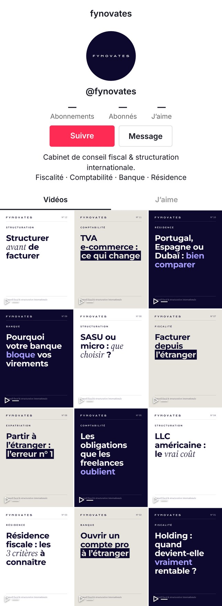
Les trois gabarits tournent dans l’ordre A, B, C, puis C, A, B, puis B, C, A. Le feed forme des diagonales régulières, jamais deux couleurs identiques côte à côte.
Même place pour tout : FYNOVATES et le numéro en haut, la rubrique, le titre, puis la ligne de signature en bas. D’une vidéo à l’autre, seul le titre change.
Fiscalité, Banque, Résidence, Structuration, Comptabilité, Expatriation. La rubrique classe la vidéo dès la vignette.
Huit mots au maximum, une question ou un sujet concret, et un seul mot clé mis en valeur.
Titres en Montserrat Bold, mot clé en Source Serif italique sur le gabarit blanc, signature en Source Serif.
Le titre reste entre 330 et 1 500 px de haut, dans la partie gardée par la vignette du profil (recadrage 3:4) et au-dessus de la légende de la vidéo.
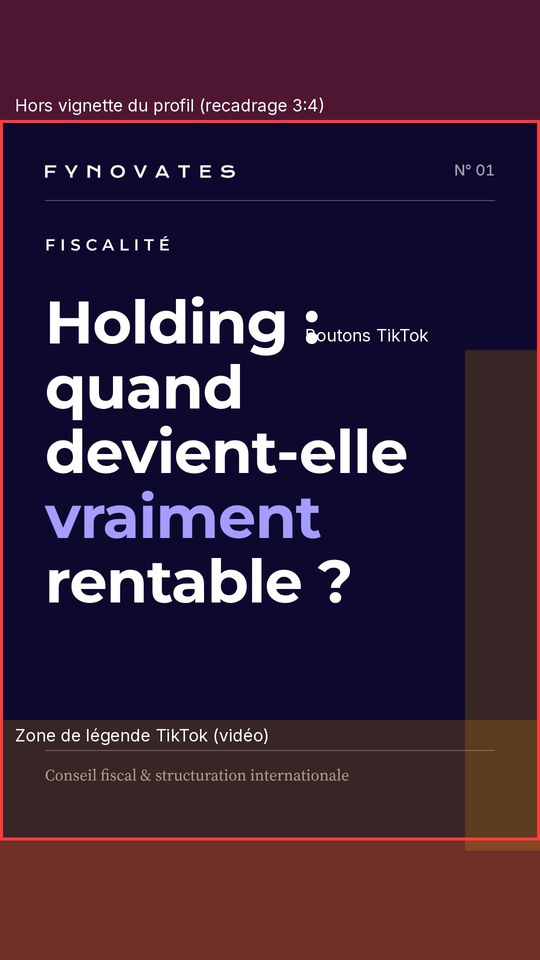
Au moment de publier, choisissez « Modifier la couverture » puis importez le PNG 1080 × 1920 correspondant à la vidéo.
Ajoutez une ligne (rubrique et titre) dans tiktok/covers.mjs et relancez le script : la couverture suivante est générée avec le bon numéro et le bon gabarit.
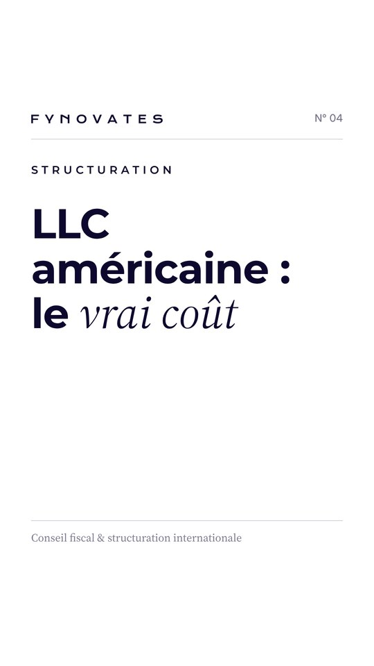
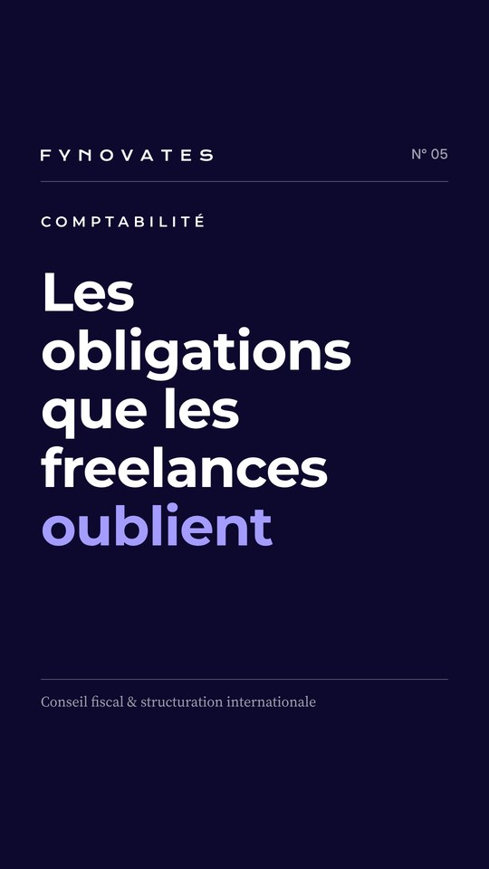
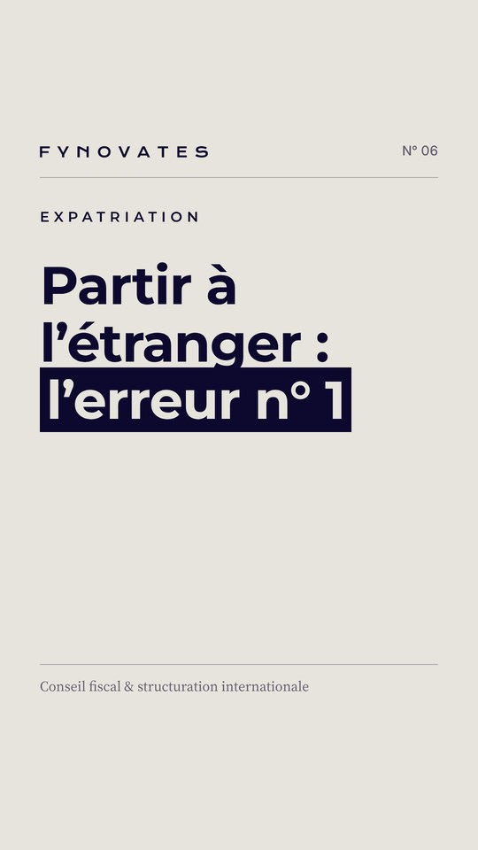
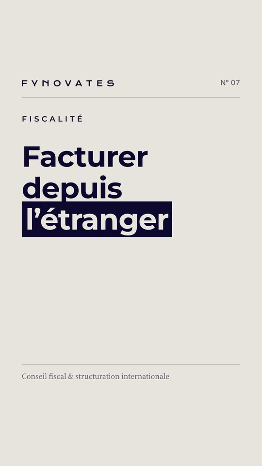
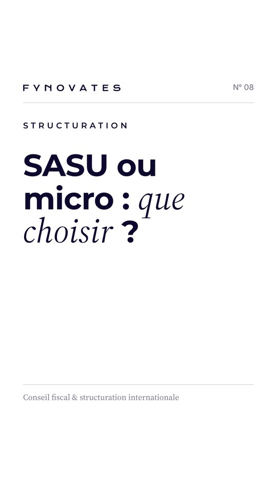
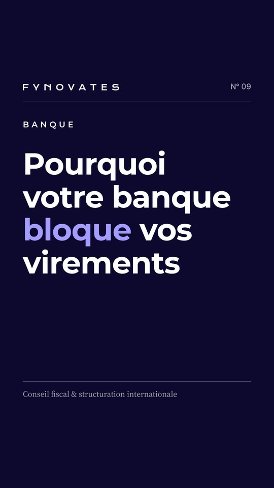
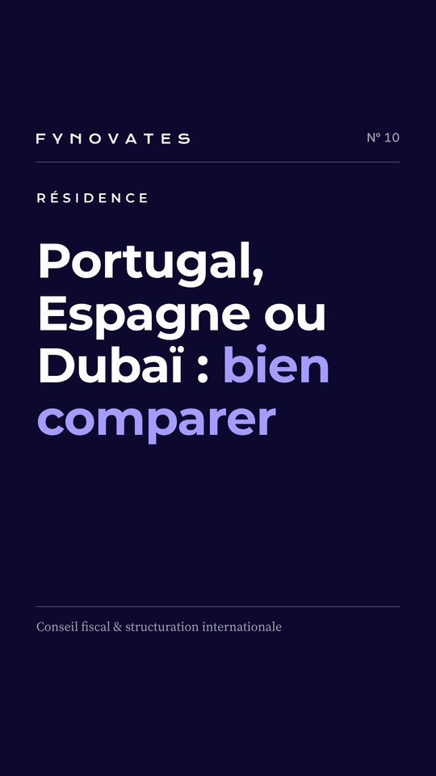
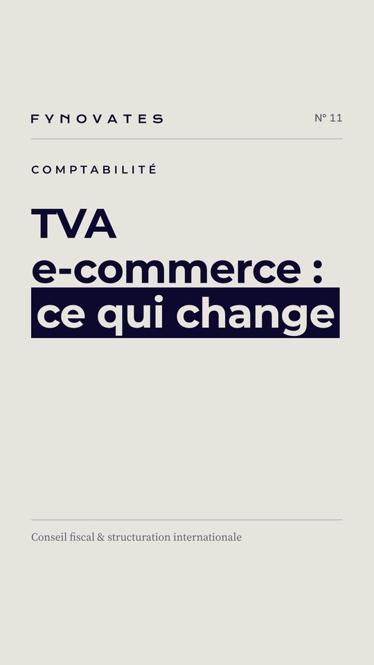
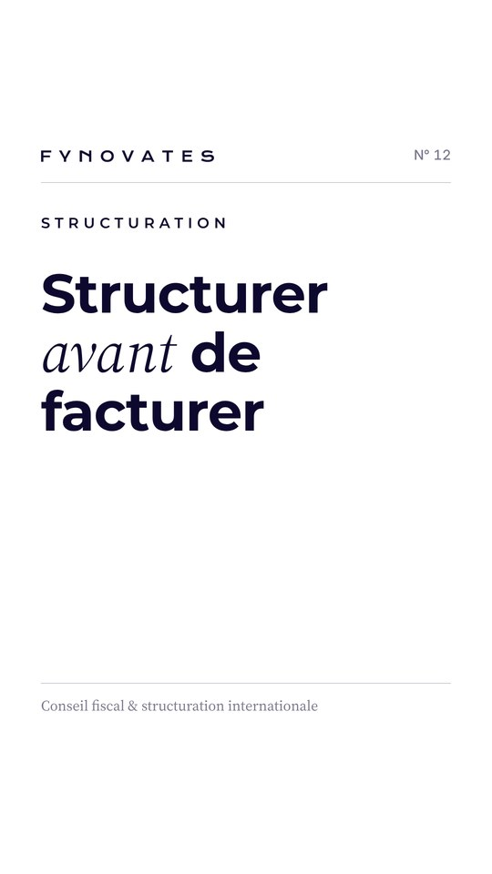